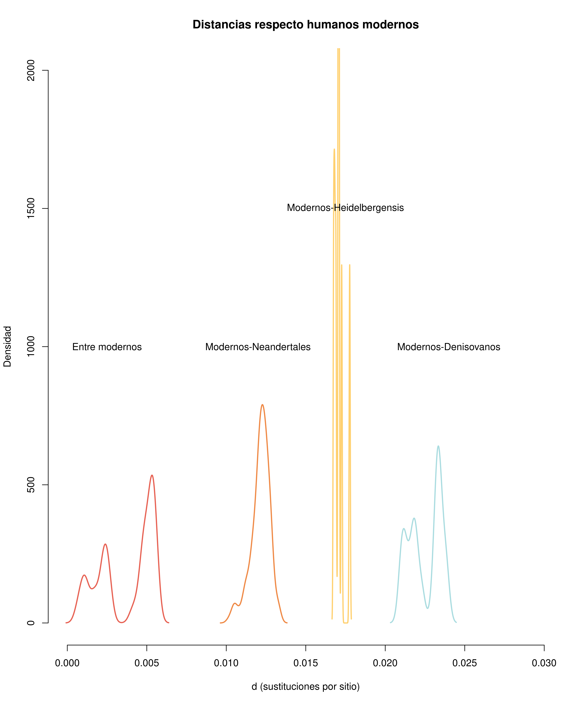
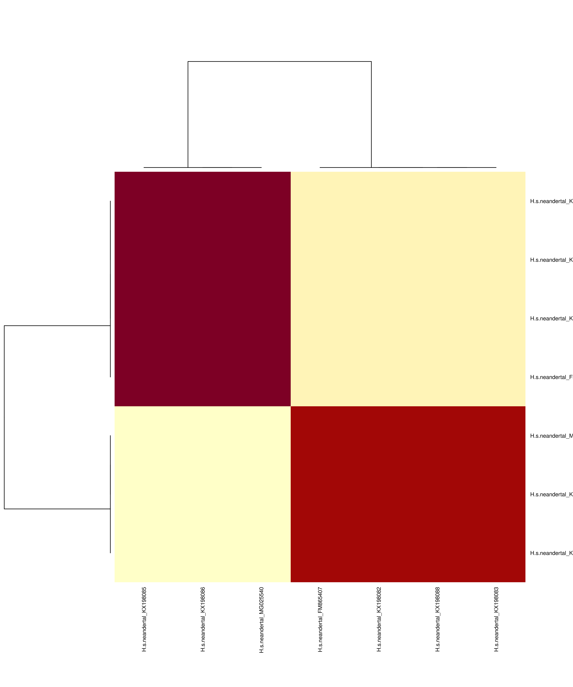

# 1. Forzamos a Quarto a usar tu carpeta personal segura
my_path <- "/home/VMAULES/ruizven2/R/x86_64-pc-linux-gnu-library/4.6"
.libPaths(c(my_path, .libPaths()))
# 2. Instalamos las piezas que faltan (si no están ya)
paquetes_necesarios <- c("fastmap", "rmarkdown", "rlang", "htmltools", "digest")
for (p in paquetes_necesarios) {
if (!requireNamespace(p, quietly = TRUE)) {
install.packages(p, lib = my_path, repos = "[https://cloud.r-project.org](https://cloud.r-project.org)")
}
}
# 3. Cargamos las librerías de la práctica
library(ape)
library(phangorn)
# 4. Leemos los datos
mtdna <- read.phyDat('../../data/mtDNA.fasta', format = 'fasta')Práctica 9. Reconstrucción filogenética
Introducción
Aunque existen muy buenos programas para inferir filogenias fuera del entorno de R (es decir, para el terminal de Bash), utilizar las herramientas en R tiene la ventaja de poder representar los árboles, manipularlos y extraer información de ellos con toda la flexibilidad que permite un lenguaje de programación. Otros programas como RAxML o IQtree producirían los resultados en forma de archivos de texto con formato Newick o NEXUS. En R, los árboles serán objetos de clase phylo, que pueden también ser exportados como archivos de texto con formato Newick con la función write.tree() del paquete ape. Este paquete será cargado automáticamente cuando carguemos el paquete phangorn, que proporciona las principales funciones para inferencia filogenética.
Objetivos
Obtener una filogenia calibrada de homininos y algunos primates, a partir de secuencias mitocondriales.
Datos
Pinchando aquí descargaréis un alineamiento en formato FASTA de 42 cromosomas mitocondriales completos de: un gorila, cuatro chimpancés, cuatro bonobos, un Homo heidelbergensis (de hace unos 400000 años), 4 humanos denisovanos (de hace entre 30000 y 110000 años), 19 humanos neandertales (de hace entre 30000 y 180000 años) y 9 humanos anatómicamente modernos (actuales). Encontréis también el archivo en el aula virtual, con el nombre mtDNA.fasta, por si el enlace no funciona.
Debes haber guardado el archivo mtDNA.fasta en la carpeta de datos.
Después de ejecutar el bloque anterior, habrás cargado los datos en el objeto de clase phyDat llamado mtdna. Puedes usar la consola de R para echarle un vistazo, por ejemplo con la función glance() o incluso para generar una imagen del alineamiento con image(). Si tienes instalado el paquete Biostrings (de Bioconductor), puedes crear un objeto de classe DNAStringSet con as.StringSet(mtDNA), al que se le pueden aplicar muchas otras funciones. Pero no es necesario.
Árboles basados en distancias
Los árboles NJ y UPGMA pueden proporcionar una idea rápida de cómo podría ser la relación filogenética entre las secuencias. Como métodos basados en distancias que son, necesitamos calcular primero las distancias. Podemos hacerlo en el mismo paso en el que generamos el árbol: nj(dist.ml(mtdna)). O bien, podemos hacerlo en dos pasos: guardar la matriz de distancias en un objeto de clase dist, y después generar los árboles.
La función dist.ml() (de phangorn) solo ofrece un par de modelos de evolución de nucleótidos para estimar distancias: F81 y JC69 (ofrece 17 modelos para proteínas). La función dist.dna() de ape (que no se aplica sobre objetos phyDat, sino DNAbin) ofrece algunas opciones más. Pero en el fondo, los métodos NJ y UPGMA son sólo heurísticos rápidos, con los que no hace falta usar distancias de alta precisión.
distancias <- dist.ml(mtdna, model = 'F81')
mt_nj <- NJ(distancias)
mt_upgma <- upgma(distancias)
NoteEjercicio 2:Estructura y visualización
Para qué sirven las funciones add.scale.bar() y axisPhylo()?
add.scale.bar() añade una barra que indica la escala de sustituciones por sitio. axisPhylo() dibuja un eje con la distancia evolutiva en la base del gráfico.
¿De qué clase son los objetos mt_nj y mt_upgma?
class(mt_nj)[1] "phylo"class(mt_upgma)[1] "phylo"Consulta la estructura de estos objetos (str(mt_nj)).
str(mt_nj)List of 4
$ edge : int [1:81, 1:2] 47 47 54 54 53 53 52 52 51 51 ...
$ edge.length: num [1:81] 6.03e-05 5.20e-08 -4.37e-08 4.37e-08 8.51e-08 ...
$ tip.label : chr [1:42] "G.gorilla_D38114" "P.troglodytes_JF727212" "P.troglodytes_JN191207" "P.troglodytes_JF727168" ...
$ Nnode : int 40
- attr(*, "class")= chr "phylo"
- attr(*, "order")= chr "postorder"Represéntalos gráficamente (plot(mt_nj)) y consulta la ayuda de la función plot.phylo() para saber qué opciones de representación gráfica tienes.
plot(mt_nj)
plot(mt_upgma)
Enraizar
Escogiendo el nodo
El árbol mt_nj no está enraizado (puedes comprobarlo con is.rooted()). Tenemos un par de opciones para enraizarlo. Una opción es root(), función en la que debemos especificar o bien el outgroup o bien el nodo interno en el que queremos situar la raíz. Para saber cómo identificar los nodos internos, puedes invocar nodelabels() después de haber usado plot(mt_nj). Por ejemplo, en mi caso, el nodo 75 parece ser el ancestro entre gorilas y chimpancés, y por tanto también es ancestro de los humanos. Por tanto:
is.rooted(mt_nj)[1] FALSEmt_nj_rooted <- root(mt_nj, node = 75)plot(mt_nj)
nodelabels()
Con un outgroup
La numeración de los nodos internos siempre sigue a la de las hojas (o puntas) del árbol. El orden es caprichoso y después de enraizar, lo que era el 75 en mt_nj ahora será el 43 en mt_nj_rooted. Para garantizar que el enraizado no depende de la numeración, es más seguro usar el nombre del outgroup:
mt_nj_rooted <- root(mt_nj, outgroup = 'G.gorilla_D38114')mt_nj_rooted <- midpoint(mt_nj)En el punto medio
Al representar el árbol enraizado (plot(mt_nj_rooted)) verás que no todas las hojas del árbol están a la misma altura. El punto exacto en el que se sitúa la raíz en una rama es arbitrario y root() no se esfuerza mucho en intentar que el árbol parezca ultramétrico. La otra opción es la función midpoint(), que escoge la posición de la raíz para que el árbol esté más equilibrado:
plot(mt_nj_rooted, align.tip.label = TRUE, main = 'NJ, enraizado en punto medio')
nodelabels(frame = 'none')
add.scale.bar()
Con datación de hojas
El enraizado en punto medio asume que todas las hojas son contemporáneas, como sucede en muchos casos. Pero, en nuestros datos tenemos secuencias contemporáneas y también arcaicas. En el apéndice encontrarás referencias sobre las edades estimadas de esas secuencias. Conociendo estas edades, podemos aplicar un método de enraizado llamado root-to-tip regression, mediante la función rtt() de ape.
Lo primero es crear un vector de fechas (o edades) para todas las hojas del árbol. Podemos expressar las edades de las secuencias arcaicas como el número (negativo) de años que hace que dejaron de evolucionar. Para saber el orden en que debemos especificar las edades, podemos usar mt_nj$tip.label.
fechas <- c(0, 0, 0, 0, 0, 0, 0, 0, 0,
-400000,
-39000, -50000, -110000, -110000,
-39820, -40096, -38515, -38310, -39000, -40000, -41210,
-42430, -42540, -43230, -43780, -44290, -44770, -49000,
-50000, -82752, -65000, -122287, -110450,
0, 0, 0, 0, 0, 0, 0, 0, 0)
fechas <- setNames(fechas, mt_nj$tip.label)
fechas G.gorilla_D38114 P.troglodytes_JF727212
0 0
P.troglodytes_JN191207 P.troglodytes_JF727168
0 0
P.troglodytes_HM068590 P.paniscus_KX211934
0 0
P.paniscus_KX211928 P.paniscus_GU189658
0 0
P.paniscus_GU189664 H.heidelbergensis_NC_023100
0 -400000
H.s.denisova_NC_013993 H.s.denisova_FR695060
-39000 -50000
H.s.denisova_KX663333 H.s.denisova_KT780370
-110000 -110000
H.s.neandertal_KX198085 H.s.neandertal_KX198086
-39820 -40096
H.s.neandertal_MG025538 H.s.neandertal_NC_011137
-38515 -38310
H.s.neandertal_FM865409 H.s.neandertal_FM865407
-39000 -40000
H.s.neandertal_KX198088 H.s.neandertal_KX198083
-41210 -42430
H.s.neandertal_MG025540 H.s.neandertal_MG025536
-42540 -43230
H.s.neandertal_MG025537 H.s.neandertal_KX198087
-43780 -44290
H.s.neandertal_KX198082 H.s.neandertal_FM865408
-44770 -49000
H.s.neandertal_KU131206 H.s.neandertal_KF982693
-50000 -82752
H.s.neandertal_FM865411 H.s.neandertal_KY751400
-65000 -122287
H.s.neandertal_MK033602 H.s.modern_EU092846
-110450 0
H.s.modern_EU092665 H.s.modern_JQ045086
0 0
H.s.modern_DQ779927 H.s.modern_DQ779932
0 0
H.s.modern_AP008640 H.s.modern_AY495317
0 0
H.s.modern_J01415 H.s.modern_FJ236981
0 0 A continuación se escoge la posición de la raíz que optimiza la regresión entre distancia de raíz a puntas y edades de las puntas (Rambaut et al. 2016).
mt_nj_rtt <- rtt(mt_nj, tip.dates = fechas, objective = 'rms')Distancias
Si has creado el objeto distancias antes, puedes usarlo para conocer la cantidad estimada de cambios entre los cromosomas mitocondriales humanos y de neandertales, por ejemplo. El objeto de clase dist es incómodo, pero podemos obtener una simple matriz fácilmente:
Calculamos cuánto se parecen los grupos principales (Modernos, Neandertales, Chimpancés).
distMat <- as.matrix(distancias)Aprovechando que los nombres de las secuencias tienen una estructura coherente, podemos usar startsWith() para seleccionar a los humanos modernos o a los neandertales, etc.:
modernos <- startsWith(colnames(distMat), 'H.s.modern')
neandertales <- startsWith(colnames(distMat), 'H.s.neandertal')
denisovanos <- startsWith(colnames(distMat), 'H.s.denisova')
chimpances <- startsWith(colnames(distMat), 'P.troglodytes')
bonobos <- startsWith(colnames(distMat), 'P.paniscus')La distancia estimada media entre humanos y neandertales se puede obtener como:
mean(distMat[modernos, neandertales])[1] 0.01214282
Las distancias estimadas no son exactas. Cuanto mayor es la distancia, mayor es el error en la estimación. Además el modelo disponible podia no ser el adecuado. Pero nos ayudan a estimar el tiempo transcurrido desde que dos linajes se separaron, si asumimos el reloj molecular. Por ejemplo, estas distancias sugieren que los humanos modernos divergieron de los neandertales hace una cantidad de tiempo aproximadamente igual al 13.3% del tiempo que nos separa de los chimpancés, que podrían ser más de 850000 años si del chimpancé nos separan 6.5 millones de años.
En los árboles las distancias se representan mediante la suma de las longitudes que separan las hojas. Las podemos obtener con la función cophenetic():
distCofen <- cophenetic(mt_nj_rooted)Limpieza o filtrado del alineamiento
Las distancias crudas, como número de diferencias, nos pueden informar de la presencia de pares de secuencias idénticas. Podríamos dejarlas, pero algunos de los métodos que usaremos a continuación pueden generar errores, por ejemplo cuando dos secuencias idénticas se supone que pertenecen a épocas diferentes.
crudas <- dist.dna(as.DNAbin(mtdna), model = 'raw')
crudas <- as.matrix(crudas)
identicas <- which(crudas == 0 & lower.tri(crudas), arr.ind = TRUE)
# posiciones de la semimatriz inferior donde las distancias son 0:
identicas row col
H.s.neandertal_KX198086 16 15
H.s.neandertal_MG025540 23 15
H.s.neandertal_MG025540 23 16
H.s.neandertal_KX198088 21 20
H.s.neandertal_KX198083 22 20
H.s.neandertal_KX198082 27 20
H.s.neandertal_KX198083 22 21
H.s.neandertal_KX198082 27 21
H.s.neandertal_KX198082 27 22repetidas <- unique(c(identicas[, 'row'], identicas[, 'col']))
heatmap(crudas[repetidas, repetidas], cexRow = 0.7, cexCol = 0.7)
Así pues, las secuencias de Neandertales KX198085, KX198086 y MG025540 (todas ellas con una edad estimada de unos 40000 años) son idénticas entre ellas; y las secuencias, también Neandertales FM865407, KX198082, KX198088 y KX198083 son idénticas entre ellas. Bueno, en realidad, la comparación ignora las posiciones en las que una secuencia contiene ambigüedades (Ns). Dejaremos sólo una de cada grupo: MG025540 y FM865407, que son las que menos ambigüedades tienen en la secuencia. Como no conocemos una función que elimine secuencias de un objeto phyDat, necesitamos especificar aquellas con las que nos queremos quedar. Podríamos usar la función subset() o bien la función [, tal como la aplicaríamos a una matriz. También existe una función unique(), pero si la usamos perdemos control sobre qué representantes conservamos de cada grupo de secuencias idénticas.
# La exclamación ("!") invierte el valor lógico de lo que la sigue.
# La función "grepl()" produce un vector lógico con "TRUE" donde los nombres
# de las secuencias contienen alguna de esas palabras.
mtdna37 <- mtdna[! grepl('(KX198085|KX198086|KX198082|KX198088|KX198083)',
names(mtdna)), ]
mtdna3737 sequences with 16603 character and 974 different site patterns.
The states are a c g t Por otra parte, la secuencia del gorila no nos hace falta: es demasiado divergente y puede haber evolucionado a un ritmo diferente.
mtdna36 <- mtdna37[! startsWith(names(mtdna37), 'G.gorilla'),]Escoger el modelo de evolución molecular
Las secuencias mitocondriales proporcionan suficiente información para determinar con confianza la topología del árbol que relaciona los grupos principales. Sólo algunas regiones de árbol, como la relación exacta entre los miembros de un mismo grupo, presentan dificultad. Para estimar mejor la topología y las longitudes de las ramas, debemos usar el método de máxima verosimilitud, para el cual sí es fundamental escoger el modelo evolutivo más adecuado. Para ello usamos la funcion modelTest(), que devuelve un objeto de clase modelTest, que también puede usarse como un simple marco de datos.
modelos <- modelTest(mtdna36, control = pml.control(trace = 0))
head(modelos) Model df logLik AIC AICw AICc AICcw BIC
1 JC 69 -43393.51 86925.02 0 86925.60 0 87457.51
2 JC+I 70 -42830.37 85800.74 0 85801.35 0 86340.96
3 JC+G(4) 70 -42826.86 85793.72 0 85794.32 0 86333.93
4 JC+G(4)+I 71 -42806.58 85755.15 0 85755.77 0 86303.08
5 F81 72 -42566.50 85277.01 0 85277.64 0 85832.66
6 F81+I 73 -41986.64 84119.29 0 84119.94 0 84682.65Si tienes más de un procesador (y si tienes el paquete parallel instalado), puedes pedirle que los use:
modelos <- modelTest(mtdna36, control = pml.control(trace = 0),
multicore = TRUE, mc.cores = 4)Lo que hace modelTest() es calcular la verosimilitud de cada modelo sobre un mismo árbol. Al hacerlo, debe optimizar los parámetros de cada modelo, pero no optimiza el árbol. Sería una pérdida de tiempo no guardar los parámetros optimizados, que son un excelente punto de partida para la búsqueda del árbol más verosímil. Podemos extraer cualquiera de los modelos comparados con la función as.pml():
fit <- as.pml(modelos, 'GTR+G(4)+I')
fitmodel: GTR+G(4)+I
loglikelihood: -39274.08
unconstrained loglikelihood: -45918.42
Proportion of invariant sites: 0.6588691
Model of rate heterogeneity: Discrete gamma model
Number of rate categories: 4
Shape parameter: 0.9844972
Rate Proportion
1 0.0000000 0.65886908
2 0.3923722 0.08528273
3 1.3837561 0.08528273
4 2.9237543 0.08528273
5 7.0258207 0.08528273
Rate matrix:
a c g t
a 0.000000 1.9690287 62.9049154 1.213249
c 1.969029 0.0000000 0.6641341 46.736515
g 62.904915 0.6641341 0.0000000 1.000000
t 1.213249 46.7365149 1.0000000 0.000000
Base frequencies:
a c g t
0.3094827 0.3112863 0.1305929 0.2486381 Aquí se demuestra que modelos no es un simple marco de datos, sino que tiene escondida mucha información, incluyendo de hecho el árbol y el alineamiento.
También podemos usar as.pml() para extraer el modelo más adecuado a los datos según alguno de los criterios disponibles (BIC, AIC, AICc). El motivo por el que el modelo más adecuado no es necesariamente el más verosímil es que la verosimilitud siempre será mayor para un modelo más complejo (con más parámetros), porque tiene más grados de libertad para ajustarse a los datos. Los criterios de selección penalizan los modelos con más parámetros para hacer la comparación más justa. El peligro de usar un modelo con demasiados parámetros es el de sobreajustar el modelo, es decir, tomar el ruído natural de los datos como algo que el modelo también debe explicar.
fit <- as.pml(modelos, 'BIC')
fitmodel: TIM2+G(4)+I
loglikelihood: -39277.23
unconstrained loglikelihood: -45918.42
Proportion of invariant sites: 0.6583857
Model of rate heterogeneity: Discrete gamma model
Number of rate categories: 4
Shape parameter: 0.9826666
Rate Proportion
1 0.0000000 0.65838569
2 0.3907403 0.08540358
3 1.3801504 0.08540358
4 2.9186935 0.08540358
5 7.0195271 0.08540358
Rate matrix:
a c g t
a 0.000000 2.028462 77.78384 2.028462
c 2.028462 0.000000 1.00000 57.870030
g 77.783845 1.000000 0.00000 1.000000
t 2.028462 57.870030 1.00000 0.000000
Base frequencies:
a c g t
0.3094827 0.3112863 0.1305929 0.2486381 Información de la sesión
sessionInfo()R version 4.6.0 (2026-04-24)
Platform: x86_64-pc-linux-gnu
Running under: Ubuntu 22.04.5 LTS
Matrix products: default
BLAS: /usr/lib/x86_64-linux-gnu/openblas-pthread/libblas.so.3
LAPACK: /usr/lib/x86_64-linux-gnu/openblas-pthread/libopenblasp-r0.3.20.so; LAPACK version 3.10.0
locale:
[1] LC_CTYPE=es_ES.UTF-8 LC_NUMERIC=C
[3] LC_TIME=es_ES.UTF-8 LC_COLLATE=es_ES.UTF-8
[5] LC_MONETARY=es_ES.UTF-8 LC_MESSAGES=es_ES.UTF-8
[7] LC_PAPER=es_ES.UTF-8 LC_NAME=C
[9] LC_ADDRESS=C LC_TELEPHONE=C
[11] LC_MEASUREMENT=es_ES.UTF-8 LC_IDENTIFICATION=C
time zone: Europe/Madrid
tzcode source: system (glibc)
attached base packages:
[1] stats graphics grDevices utils datasets methods base
other attached packages:
[1] phangorn_2.12.1 ape_5.8-1
loaded via a namespace (and not attached):
[1] nlme_3.1-168 cli_3.6.5 knitr_1.50 rlang_1.2.0
[5] xfun_0.56 generics_0.1.4 jsonlite_2.0.0 htmltools_0.5.9
[9] rmarkdown_2.29 quadprog_1.5-8 grid_4.6.0 evaluate_1.0.5
[13] fastmap_1.2.0 yaml_2.3.12 lifecycle_1.0.5 compiler_4.6.0
[17] codetools_0.2-20 igraph_2.1.4 Rcpp_1.1.1-1.1 pkgconfig_2.0.3
[21] fastmatch_1.1-8 rstudioapi_0.18.0 lattice_0.22-7 digest_0.6.39
[25] parallel_4.6.0 magrittr_2.0.4 Matrix_1.7-5 tools_4.6.0 Referencias
Rambaut, A., T. T. Lam, L. Max Carvalho, and O. G. Pybus. 2016. “Exploring the Temporal Structure of Heterochronous Sequences Using TempEst.” Virus Evolution 2 (1): vew007. https://doi.org/10.1093/ve/vew007.